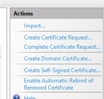
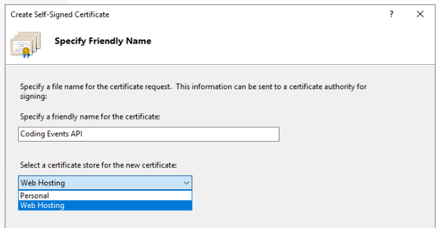
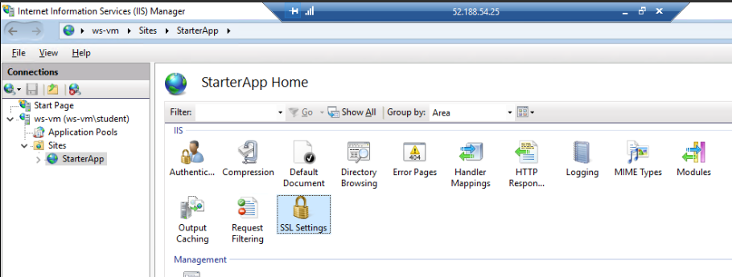
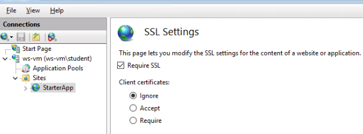
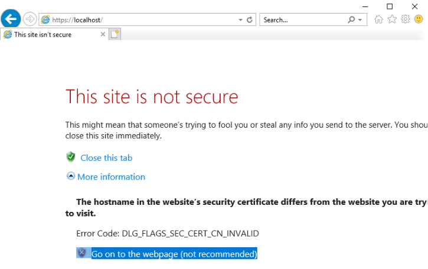
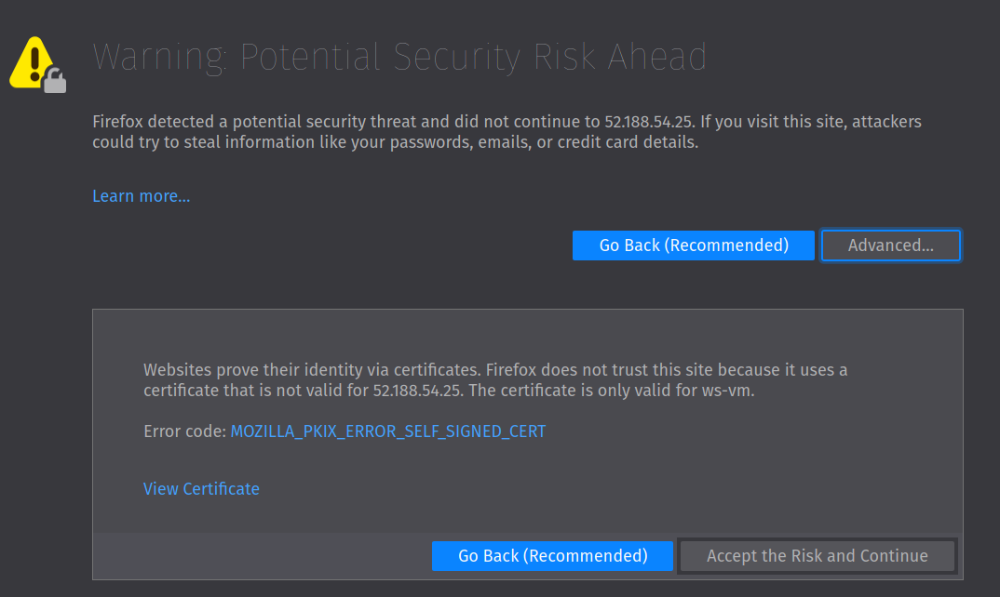

In today’s studio you will practice deploying the Coding Events API to a Windows Server VM. You will be using the az CLI and the new Windows Server tools that you learned about.
While this studio will be challenging, do your best to complete the tasks on your own by referring to your notes and previous lessons. If you are completely stuck, then reach out to a TA or your instructor for help.
We will provide some high-level planning and guidance for new steps you haven’t seen before. Otherwise, you are on your own to complete the mission. Good luck!
This studio will be considered complete when the Swagger documentation page of your Coding Events API is accessible over https at the public IP address of the host VM. You will be deploying the same (final) version of the API on the 3-aadb2c branch.
Feel free to use Postman to confirm functionality, but the main purpose of this studio is to deploy to a Windows Server VM using the IIS web server, not to practice with Postman.
The following is a checklist of tasks you will need to complete. This list is neither exhaustively detailed nor necessarily in a specific order:
appsettings.json after provisioning resourceshttpsNote
You can provision and configure your resources by any approach you prefer. However, this is a great opportunity to write new scripts for the aspects you are familiar with automating.
While we have shown some of the VM configuration steps using the GUI applications on Windows Server, it is technically possible to automate all of it with PowerShell scripts. Focus on manually completing the studio first, then challenge yourself to fully automate the deployment!
Windows and Linux have many fundamental differences between them that stem from their contrasting kernel designs. But in the context of a host machine for web apps, the choice of OS is largely arbitrary. The tools and techniques may differ, but they both share OS-agnostic requirements that are dictated by the application itself. We refer to these requirements as the application’s hosting environment needs.
Let’s consider the general requirements that our API has on its hosting environment:
publish and execute our API’s artifactgit is used as our tool for delivering (cloning and publishing) the artifact to the VMThe following sections will guide you on specifics and steps you may not have seen yet. Before starting the studio take a moment to read them over and come up with a plan for when and how you will use them.
Tip
Don’t forget to look over the Gotchas section at the end for a heads-up on common mistakes!
Many of these requirements can be satisfied by using a package manager. On Windows Server, we use the chocolatey package manager (choco). Refer to previous lessons if you need a refresher on how to install chocolatey.
The packages you need to install with choco have the following names:
dotnetcore-sdk: the latest SDK and the dotnet CLImysql: the latest MySQL database server and its companion tool the mysql CLIgit: the latest Git version control systemdotnetcore-windowshosting: the latest IIS hosting bundle for serving .NET core Web AppsRecall that the general form of using choco is:
> choco install <package name> -y
Note
When installing MySQL you may see a lot of red-colored output. Despite red typically meaning something has gone horribly wrong there is nothing to be concerned about. Let it finish installing then, like the dotnet CLI installation, close and reopen PowerShell to start using it.
The MySQL database server will start up on its own after installation through choco. However, you will need to configure the Coding Events database within the MySQL server for your API to connect to and use. In the Linux deployment this was handled automatically through the setup scripts we ran. This time you will need to use the mysql CLI to set up the database, user and permissions.
The mysql CLI will open a connection to the database server and start a MySQL shell session. This shell, like the Bash or PowerShell command-line shells, is a REPL where you can enter commands and see print result output. However, unlike the scripting shells, the MySQL shell naturally only accepts MySQL syntax.
You can open the MySQL shell by issuing the following command from the PowerShell terminal in the VM:
> mysql -u root
Once inside the MySQL shell you can enter the following commands to set up the database and user. Then use the exit command to quit the MySQL shell and return to the PowerShell shell:
>> CREATE DATABASE coding_events;
>> CREATE USER 'coding_events'@'localhost' IDENTIFIED BY 'launchcode';
>> GRANT ALL PRIVILEGES ON coding_events.* TO 'coding_events'@'localhost';
>> FLUSH PRIVILEGES;
>> exit
Now confirm everything was set up correctly by connecting to the database with the new user. You will be prompted to enter the password (launchcode):
> mysql -u coding_events -D coding_events -p
If this command connects to the MySQL coding_events database you will know the previous commands executed successfully. From the MySQL shell enter exit and hit enter to return to PowerShell.
Since this deployment uses a Windows Server VM we are able to use the native IIS web server. Refer to the previous walkthrough article for the details of how to install and configure it to serve a .NET web app.
In this deployment, we will have to perform one additional step—provisioning an SSL certificate and configuring IIS to use that certificate to serve over https. Fortunately, IIS makes it easy to provision and use a self-signed certificate using the IIS Manager.
Tip
In a production deployment you would use an SSL certificate signed by an established Certificate Authority (CA). The topic of Public Key Infrastructure (PKI), which SSL certificates belong to, is beyond the scope of this class. For our purposes, the self-signed certificate is a suitable alternative.
From the IIS manager:
On the right side select the option to create a new self-signed certificate:
In the dialog box, set the following options for the name and store the certificate will be held in:
This will create the self-signed certificate and store it for use in web hosting. Now you just need to assign the certificate to your site.
When you configure the port binding of the site there is an option to set the server certificate to be used. This option is only available for a binding to https (port 443). Just as before, you can right click the site and select the edit bindings option then add an additional binding for https.
In the binding dialog, select https and the certificate you provisioned in the previous steps:
After setting the binding we want to enforce the use of SSL by forbidding any insecure requests. In the Site Features view select SSL Settings then Require SSL and Apply (in the top right corner):
 Finally, you can enable HTTP Strict Transport Security (HSTS) which will notify browsers to prevent access over http. We will also select the option for automatically upgrading from http to https to support this configuration. In the Site Features view, the right-hand panel has an option for configuring HSTS. Open this dialog to enable it:
The first time you connect to the site from a browser within the server or locally from your machine you will be presented with a warning. Because the server is using an untrusted (self-signed) certificate you need to explicitly accept its use:
From IE within the server:
From your local machine’s browser (Firefox):
After accepting the certificate your site will be served over https!
Along the way there are a few “gotchas” that you should keep in mind to save yourself some headaches.
choco¶The commands to install the Chocolatey package manager are rather involved. Below is the snippet from the walkthrough you can use:
> [System.Net.ServicePointManager]::SecurityProtocol = [System.Net.ServicePointManager]::SecurityProtocol -bor 3072; iex ((New-Object System.Net.WebClient).DownloadString('https://chocolatey.org/install.ps1'))
dotnetcore-windowshosting bundle¶Warning
As noted in the walkthrough, this bundle must be installed after installing IIS.
Below are the relevant instructions from the walkthrough.
Installing the .NET hosting bundle:
> choco install dotnetcore-windowshosting -y
Restart the underlying processes used by IIS to recognize and use the hosting bundle:
# /y is like -y and is used to skip a confirmation prompt
# when WAS is stopped it automatically stops all dependent processes including W3SVC
> net stop WAS /y
# when W3SVC is started it starts its WAS process dependency automatically
> net start W3SVC
If you destroyed your AADB2C tenant after completing the previous exercises you have two choices:
The first choice is to configure a new one from scratch. While this might not sound very appealing it will allow you to get more practice and solidify your understanding of AADB2C. You will be surprised by how much smoother the experience is when doing it for the second time. It should only take you about 10 minutes if you go through it methodically and you can always refer to the walkthroughs as a reference.
Alternatively, you can use the following settings from the demo tenant we have provided.
For the entries in appsettings.json:
https://launchcodeazurecourse.b2clogin.com/launchcodeazurecourse.onmicrosoft.com/v2.0/.well-known/openid-configuration?p=B2C_1_susi-flow3bd03224-2365-4587-b3ab-7d2bdfcb222eFor the Postman access token settings, you can leave what you currently have and update the following fields:
b1f6c144-0776-4645-a3da-4282cfff2ee1https://launchcodeazurecourse.onmicrosoft.com/3bd03224-2365-4587-b3ab-7d2bdfcb222e/user_impersonationhttps://launchcodeazurecourse.b2clogin.com/launchcodeazurecourse.onmicrosoft.com/oauth2/v2.0/authorize?p=b2c_1_susi-flowServerOrigin & KeyVaultName¶The ServerOrigin and KeyVaultName entries in your appsettings.json also need to be updated with the values relating to this new deployment. You can either:
Tip
If you want to automate these updates in your script, consider that appsettings.json is just a JSON file which can easily be updated, committed and pushed using PowerShell and git.
Refer to the PowerShell chapter and your notes for how to:
appsettings.json file into a PSCustomObjectServerOrigin and KeyVaultName properties of the object using the variable valuesappsettings.json filegitFor this studio, you will only need to provide your TA with your secure (https) public IP address.